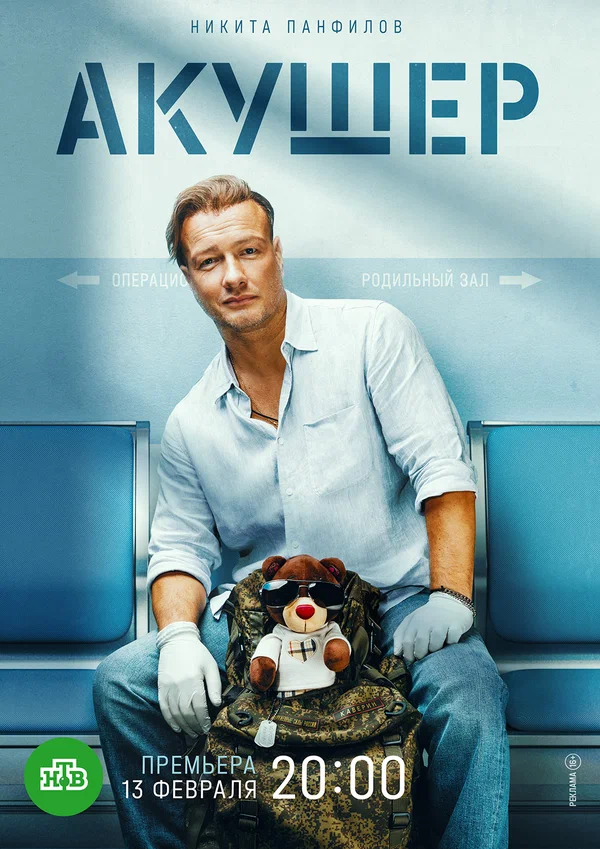

|

|
Военный хирург Глеб Каверин — жёсткий, циничный романтик.
После очередной командировки в Африку он возвращается домой, в Нижний Новгород.
Во время поездки на теплоходе беременной интернет-знаменитости становится плохо.
Сопровождавший девушку Добровольский Евгений Борисович, глава перинатального центра, в экстремальных условиях теряется,
и Каверин всё берёт в свои руки. Нарушив все мыслимые правила, он спасает девушку.
Теперь Каверин — местная знаменитость, вот только минута славы выходит ему боком.
Корреспондент местного телеканала едет к Глебу домой,
где застаёт его жену Марину с любовником — теперь весь город знает, что она ему изменяет.
|